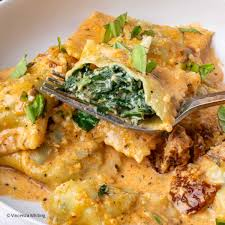

Ricotta & Spinach Ravioli Recipe
Ingredients:
- 250g fresh pasta sheets
- 200g ricotta cheese
- 150g fresh spinach, finely chopped
- 1 clove garlic, minced
- 50g parmesan cheese, grated
- 1 egg, beaten (for sealing)
- Salt & black pepper to taste
- Butter & sage sauce (for serving)
Instructions:
- In a bowl, mix ricotta, spinach, garlic, parmesan, salt, and black pepper.
- Cut fresh pasta sheets into squares, placing small spoonfuls of filling in the center.
- Brush edges with beaten egg and seal ravioli by pressing firmly.
- Boil ravioli in salted water until they float, about 3 minutes.
- In a pan, melt butter and add sage leaves, simmering until fragrant.
- Drizzle butter sauce over cooked ravioli and serve warm.